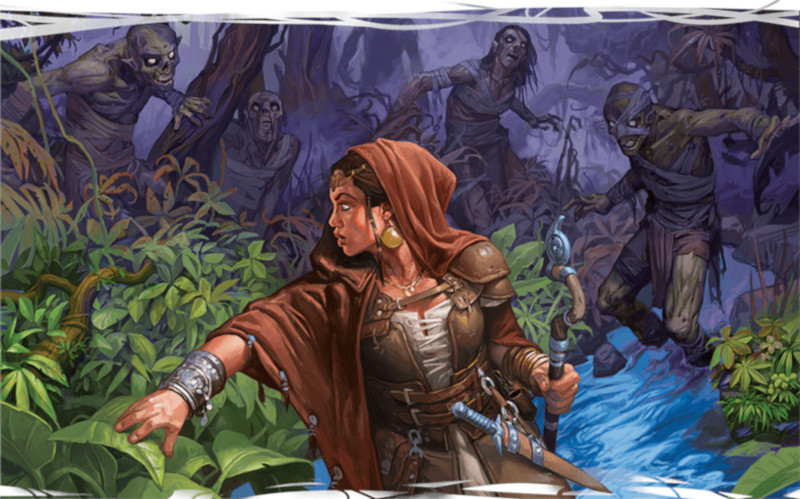

Serment des anciens
Il existe un chevalier vert, un gardien de l'ancien monde, qui vit aux frontières du monde connu. Ce chevalier et ceux qui suivent le même chemin féerique prêtent allégeance au serment des anciens, leur conférant des pouvoirs pour allumer et protéger la lumière qui donna naissance au monde. En tant que paladin qui respecte ce serment, il est de votre devoir de considérer chaque être comme un enfant de la lumière et de défaire ceux qui voudraient l'éteindre.
Capacités du serment des anciens
Le paladin gagne accès à quatre capacités de sous-classe aux niveaux 3, 7, 15 et 20. En résumé, vos capacités de sous-classe vous permettent :
- De canaliser le pouvoir divin de votre serment pour piéger votre ennemi ou repoussez les fées et fiélons.
- De gagner un accès permanent à des sorts qui définissent votre serment.
- De projeter une aura de résistance qui protège vos alliés contre la magie destructrice.
- De survivre à des coups qui vous tueraient autrement. Et aussi, ne plus souffrir des effets de la vieillesse.
- De vous transformer en avatar de la nature primordiale.
Avantages du serment des anciens
L'un des premiers avantages qu'un paladin gagne lorsqu'il prend le serment des anciens est l'accès immédiat à des sorts en dehors de leur arsenal typique. Votre capacité Sorts de serment vous donne accès à plusieurs sorts de la liste de druide dont la plupart se concentrent sur les piliers de l'exploration et de l'interaction du jeu. C'est parfait pour vous puisque votre capacité Châtiment sacré convertit vos emplacements de sorts en dégâts et que prendre quelques tours supplémentaires hors combat ne vous coûte rien en puissance brute.
En plus de vos capacités offensives déjà efficaces, le serment des anciens vous accorde aussi un certain nombre de capacités défensives incroyablement puissantes. Aura de résistance octroie la résistance à tous les sorts, peu importe leur type, à vos alliés et vous (et c'est presque un pouvoir totalement unique car seuls l'archimage et le magicien de l'école d'abjuration ont aussi la résistance aux sorts dans cette cinquième édition). De même, Sentinelle immortelle vous donne une capacité similaire à celle du barbare pour amoindrir un coup mortel et votre transformation de niveau 20 Champion des anciens vous donne des soins personnels. Sans parler de la puissance offensive qu'elle apporte comme un temps d'incantation plus rapide, et un désavantage aux jets de sauvegarde effectués pour résister à vos sorts et à votre Conduit divin.
Inconvénients du serment des anciens
Le serment des anciens est une sous-classe puissante, mais pas parfaite. Bien que cette sous-classe offre des Sorts de serment qui peuvent vous faciliter la vie pendant que vous explorer la nature sauvage, vous n'avez aucune option unique à utiliser lors d'interactions sociales, mise à part votre valeur de Charisme qu'il est intéressant de garder comme votre deuxième ou troisième plus haute caractéristique. Avoir accès à communication avec les animaux et communion avec la nature vous octroie un pouvoir d'interaction sociale similaire au druide, mais vous n'êtes pas aussi à l'aise pour parler aux gens. Cela correspond parfaitement à l'archétype de la sous-classe, un gardien stoïque des bois anciens, mais envisagez de demander à votre MD d'inclure des moments où vos capacités sociales non humanoïdes pourront briller.
Passée cette limitation, le serment des anciens n'a pas de capacité individuelle de sous-classe qui tombe à plat. Chacune d'entre elles est mécaniquement puissante ou narrativement captivante ou les deux !
Exemple de personnage
Si vous créez un paladin du serment des anciens depuis le niveau 1, rappelez-vous que vous ne gagnerez pas accès à votre sous-classe avant le niveau 3. Lors de la création de personnage, vous devriez choisir une race qui vous donne un bonus en Force, Constitution ou Charisme ; idéalement au moins deux des trois. Pour cette raison, les drakéïdes font d'excellents paladins offensifs grâce à leurs bonus en Force et en Charisme. De même, les demi-elfes font de bons paladins, tout comme les demi-orcs et les humains. D'un point de vue thématique, les elfes, demi-elfes, demi-orcs et humains ont tous un fort lien avec la nature et sont des choix évidents pour un paladin du serment des anciens.
Bien que tous les paladins soient prédisposés à porter des armures lourdes et utiliser des armes puissantes et basées sur la Force, vous pouvez aussi vous passer d'armure lourde et, à la place, utiliser des armes de finesse en priorisant votre Dextérité au lieu de votre Force. Les paladins qui se concentrent sur la Dextérité sont peu communs, surtout par rapport aux guerriers et aux rôdeurs, car leur puissante capacité Châtiment divin ne peut être activée avec des attaques à distance, seulement avec des attaques au corps à corps. Si vous voulez être un personnage offensif, faites de la Force ou de la Dextérité votre plus haute caractéristique. Si vous voulez être un personnage défensif, ce devrait être la Constitution. Le Charisme devrait toujours être votre deuxième ou troisième plus haute caractéristique. C'est important, mais vous êtes toutefois un combattant avant d'être un lanceur de sort.
Comme d'habitude, l'historique de votre personnage est à votre convenance. Les paladins sont souvent des acolytes qui ont reçu un entraînement militaire ou des soldats qui ont ressenti un appel sacré, mais les paladins avec d'autres historiques peuvent faire des héros inhabituels et captivants. Les historiques de sauvageon ou d'ermite conviennent exceptionnellement bien au thème de votre sous-classe, en tant que gardien du monde primitif.
Pour l'équipement, vous devriez probablement choisir une arme de guerre et un bouclier, même si vous êtes un paladin basé sur la Dextérité, pour des raisons qui seront expliquées plus loin. Si vous jouez un paladin basé sur la Force, vous ne pouvez pas vous tromper avec les emblématiques épée longue et bouclier et un paladin basé sur la Dextérité peut utiliser une rapière et un bouclier en tandem. Choisir cinq javelins est votre meilleure option vu que vous voudrez un moyen de vous battre à distance.
Style de combat
Au niveau 2, vous pouvez choisir un Style de combat. Vous avez quatre choix qui vous rendent chacun meilleur dans un certain rôle en combat sans vous empêcher d'utiliser des tactiques alternatives. Le style Défense est une bonne amélioration passive. Vous gagnez +1 à la CA lorsque vous portez une armure. Parfait pour survivre mais pas très proactif. Le style Duel est génial si vous combattez avec une arme à une main et augmente vos dégâts même si vous tenez un bouclier dans l'autre main. Le style Arme à deux mains est utile si vous aimez vous battre avec des armes à deux mains et peut améliorer vos dégâts même si vous tenez à deux mains une arme avec la propriété polyvalente, comme une épée longue. Enfin, le style Protection vous fait devenir un formidable protecteur, vous permettant de dévier les coups si vous vous tenez à côté de vos alliés.
À noter que les styles Archerie et Combat à deux armes sont absents de cette liste bien qu'ils soient tous deux utilisables par les guerriers et les rôdeurs. Envisagez de demander à votre MD si vous pouvez utiliser l'un de ces styles si vous jouez un paladin basé sur la Dextérité. Ces options ne sont pas surpuissantes, donc, du moment que vous ne jouez pas une campagne pour laquelle le strict respect des règles est requis, je recommande vivement que votre MD autorise ces styles pour la classe de paladin.
Sorts
Le paladin gagne aussi accès aux sorts au niveau 2, piochant depuis sa propre liste de sorts. Bien que votre sélection de sorts soit plus limitée et que vous gagniez accès à des sorts plus puissants plus lentement que les classes de lanceurs de sorts, vous contrebalancez cela avec votre robuste arsenal de combat. Prenez ce temps avant de gagner votre sous-classe au niveau 3 pour sentir le rôle que vous avez au sein du groupe. Comme ça, quand vous aurez accès à votre sous-classe (ainsi que les Sorts de serment préparés de manière permanente qui viennent avec), vous saurez de quels sorts votre groupe a besoin de manière régulière.
Heureusement, vous pouvez choisir une sélection différente de sorts au début de chaque jour, comme un clerc. L'entière liste de sorts du paladin vous est accessible, donc vous pouvez adapter votre sélection de sorts pour tous les défis auxquels vous pensez avoir à faire face. Quoi qu'il en soit, choisir une « sélection standard » de sorts sur lesquels vous pouvez comptez pour une journée d'aventure habituelle est utile. Vous pouvez préparer un nombre de sorts de paladin égal à la moitié de votre niveau (arrondi à l'inférieur) plus votre modificateur de Charisme. Donc, si vous êtes un paladin de niveau 2 avec un Charisme de 14 (+2), vous pouvez préparer trois sorts depuis la liste de sorts du paladin. Pour avoir une sélection équilibrée, choisissez un sort offensif, un défensif et un de soutien. Cette liste n'est toutefois là que pour vous aider à démarrer si vous jouez un paladin du serment des anciens pour la première fois. Avec l'expérience, vous pouvez bien entendu choisir d'autres sorts.
- Bénédiction (soutien)
- Duel forcé (défense)
- Soins (soutien)
- Faveur divine (offensif)
- Bouclier de la foi (défensif)
- Châtiment tonitruant (offensif)
- Châtiment colérique (offensif)
Dons
Au niveau 4, vous avez le choix entre Amélioration de caractéristiques ou un don. Choisir Amélioration de caractéristiques vous permet d'augmenter une caractéristique de +2 (comme augmenter votre Force de 16 à 18) ou augmenter deux caractéristiques de +1 (comme augmenter votre Force de 15 à 16 et votre Charisme de 13 à 14). Augmenter vos caractéristiques vous rend meilleur dans un large éventail de choses. Par exemple, augmenter votre Charisme diminue les chances que les ennemis résistent à vos sorts et augmente aussi vos chances de réussite aux jets de Charisme.
Les dons, d'un autre côté, vous donne une capacité spéciale qui pourrait être plus utile dans des circonstances spécifiques, contrairement aux avantages généraux apportés par Amélioration de caractéristiques. La Force, la Constitution et le Charisme sont vos caractéristiques les plus importantes puisqu'elles gouvernent vos capacités offensives, défensives et de lanceur de sorts. Comme vous avez plusieurs caractéristiques à augmenter avec Amélioration de caractéristiques, vous pourriez choisir un seul don qui vous parle vraiment pour consolider votre concept de personnage, mais certains dons seront sûrement plus utiles que d'autres à votre personnage. Par exemple :
Maître des armes à deux mains. Si vous portez une grosse arme et voulez infliger des dégâts massifs, c'est votre meilleur choix. Il est moins vital pour vous que pour un guerrier puisque vous avez votre Châtiment sacré pour des dégâts supplémentaires. Vous préférerez généralement toucher pour activer vos châtiments plutôt que de parier sur une petite augmentation de dégâts. Néanmoins, cela reste une bonne option.
Meneur exaltant. C'est un choix thématiquement approprié pour un paladin et il correspond à votre rôle de combattant sur lequel votre groupe peut compter.
Spécialiste des armes d'hast. Vous n'utilisez généralement votre action bonus que pour des sorts comme châtiment colérique, donc être capable de la transformer en attaque (et ainsi, une autre chance chance d'utiliser votre Châtiment divin, qui ne coûte pas d'action pour s'activer) est très attractif.
Résistant (Constitution). Comme avec Mage de guerre (voir ci-dessous), ce don réduit les chances d'interrompre la concentration sur vos sorts en vous octroyant la maîtrise des jets de sauvegarde de Constitution tout en augmentant votre Constitution de +1. Le bonus aux jets de sauvegarde pour maintenir la concentration n'est pas aussi bien qu'un avantage à ces jets (à bas niveau), mais il donne un spectre plus large de bonus.
Spécialiste des boucliers. Les paladins adorent se battre avec une épée dans une main et un bouclier dans l'autre, donc améliorer vos compétences d'utilisation des boucliers a du sens.
Mage de guerre. Ce don correspond parfaitement au style de jeu du paladin en diminuant la probabilité que votre concentration soit interrompue dans le feu de la bataille. Puisque les paladins n'ont que peu d'emplacements de sorts, les sorts de concentration sont un bon moyen d'étendre leur magie autant que possible car il n'y a rien de pire que de lancer un sort de concentration et être touché par un gobelin ou deux au tour d'après et perdre votre concentration à cause de si maigres dégâts.

Basé sur un article de James Haeck, traduit par Nathyouss